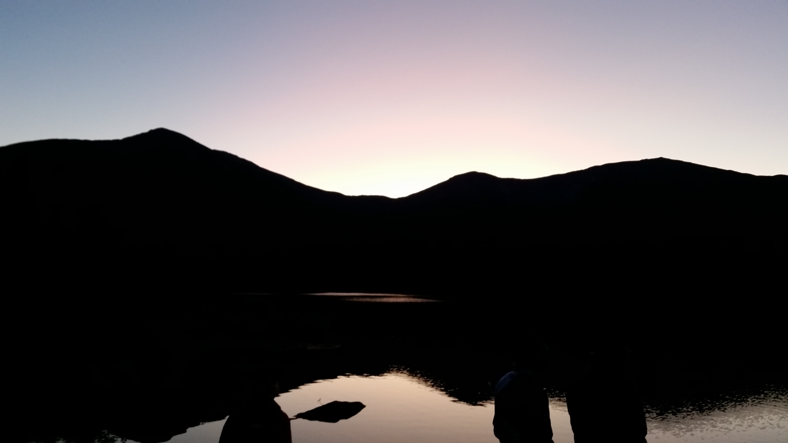
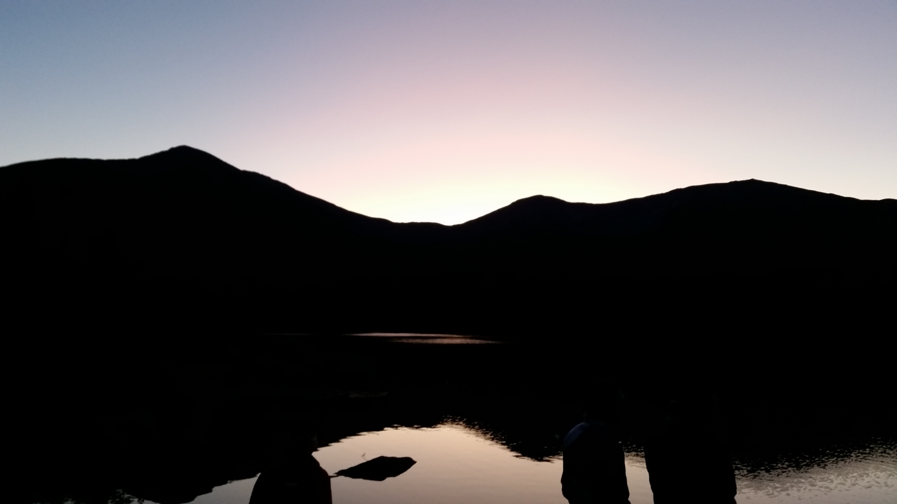
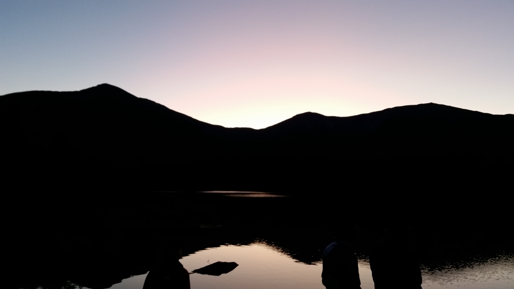

This fall I was invited by my brother to go to Baxter State Park for a weekend and climb Mt. Katahdin with him and his friends. I have never been much of a hiker or camper really but I have lived in Maine my entire life and never been. So I of course went and had so much fun. It is honestly one of the most beautiful places I have ever been. We stayed in cabins that were incredible. One of them had all windows for a wall that looked out of a pond with the mountains in the background. It is so secluded that there is no light pollution which caused the night sky to be clearer than I have ever seen it. The hike of the mountain itself is one of the harder things I have had to do. Walking over fourteen miles, over rocks and trees. We hiked up the Helon Taylor trail, onto Knife's Edge to get to the summit and hiked down the opposite side. Getting past the tree line and being able to see everything for miles was incredible. The hardest part for me was my fear of heights and having to walk on top of straight rocks with winds up to thirty mph. Although it was scary at times it was 100% worth every second and I can't wait to do it again next year. If you ever have the chance to go you absolutly should take it, even if you don't hike the summit, because it is an absolutly beautiful place.
